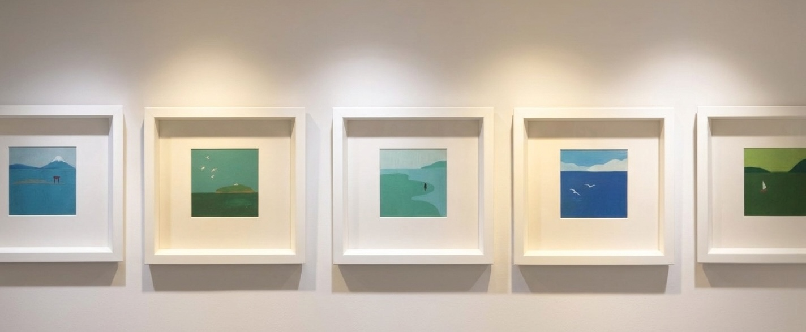
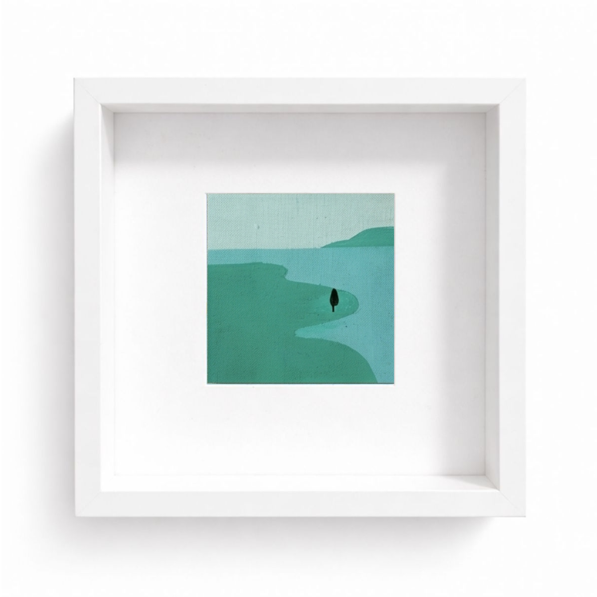
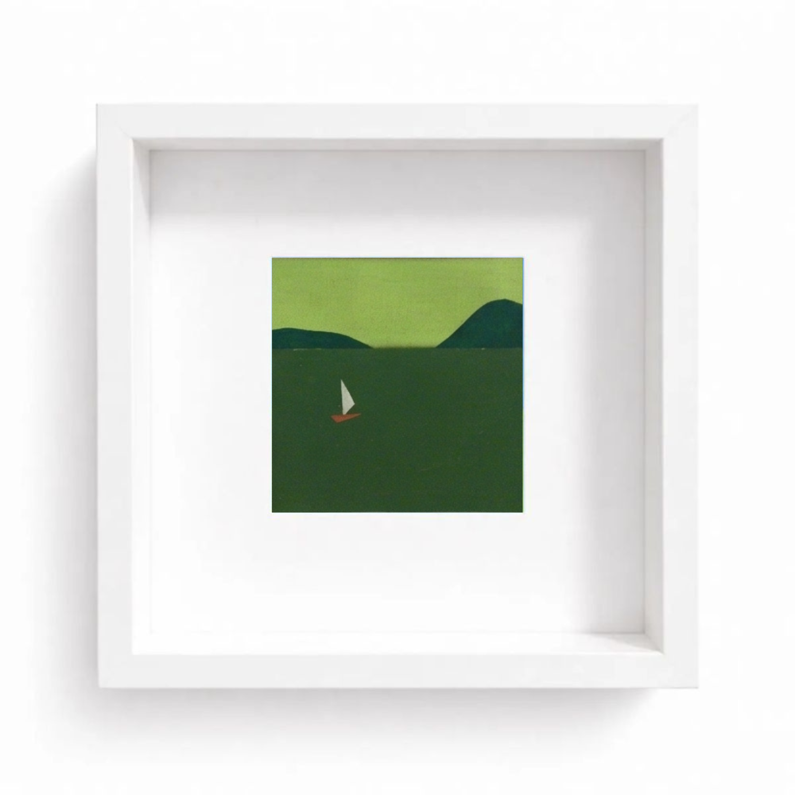
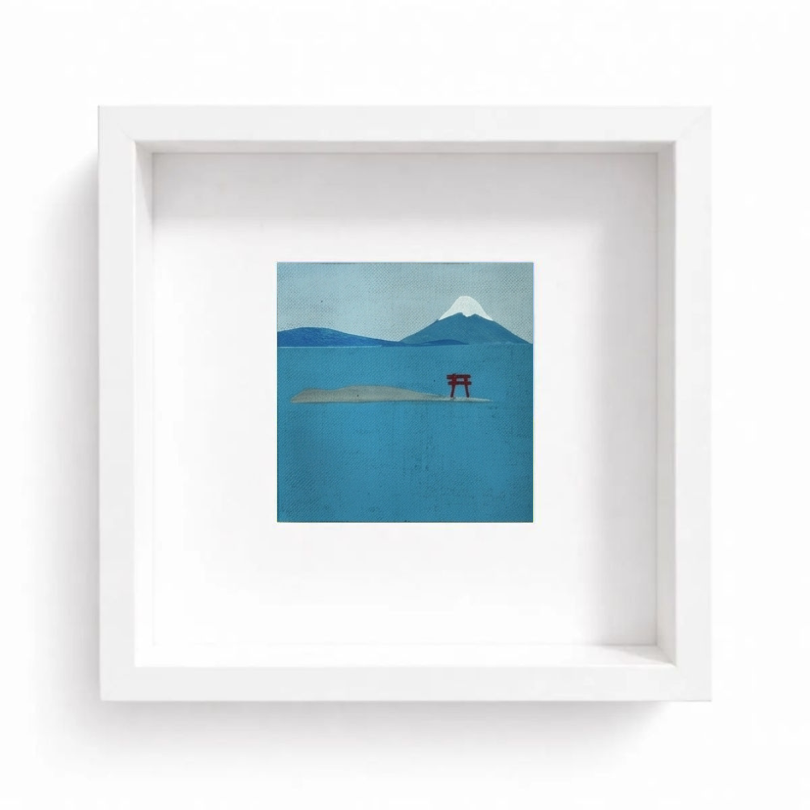
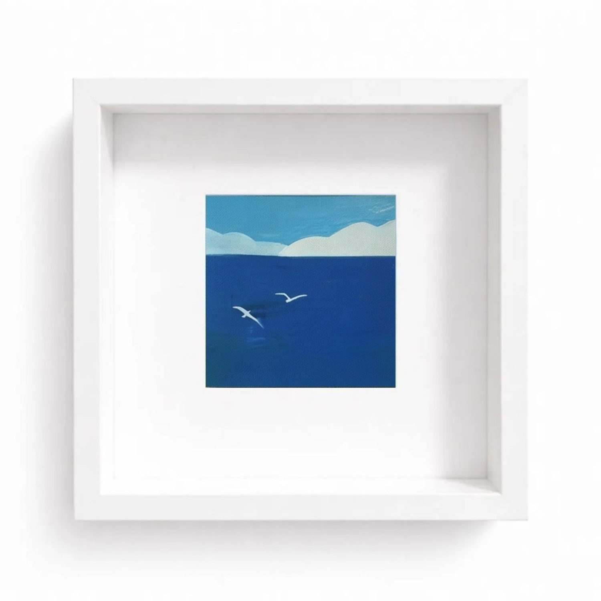
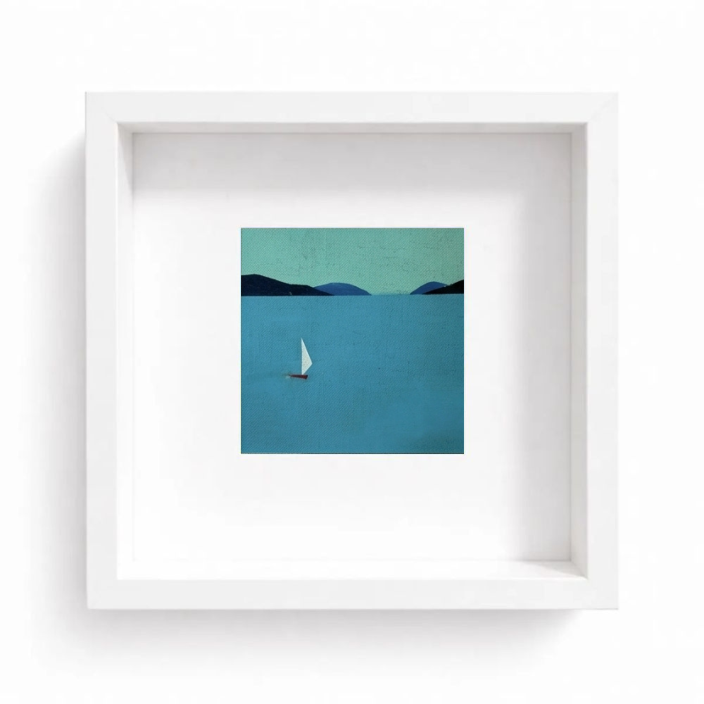
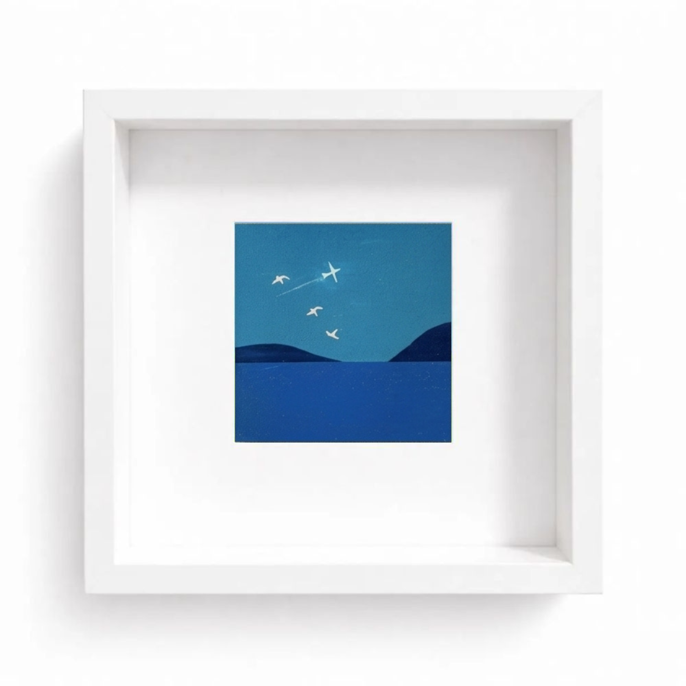
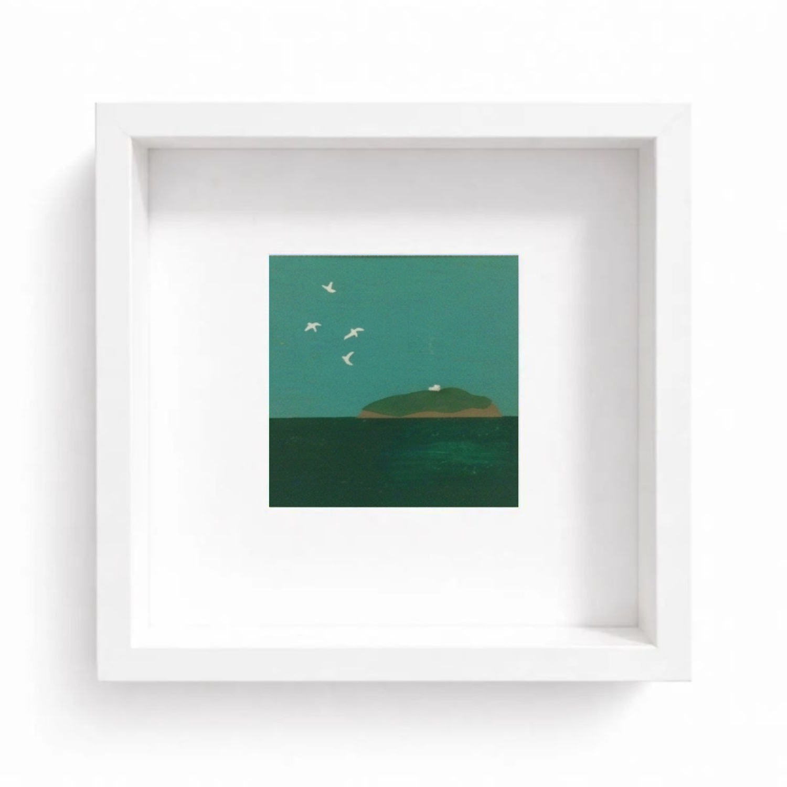
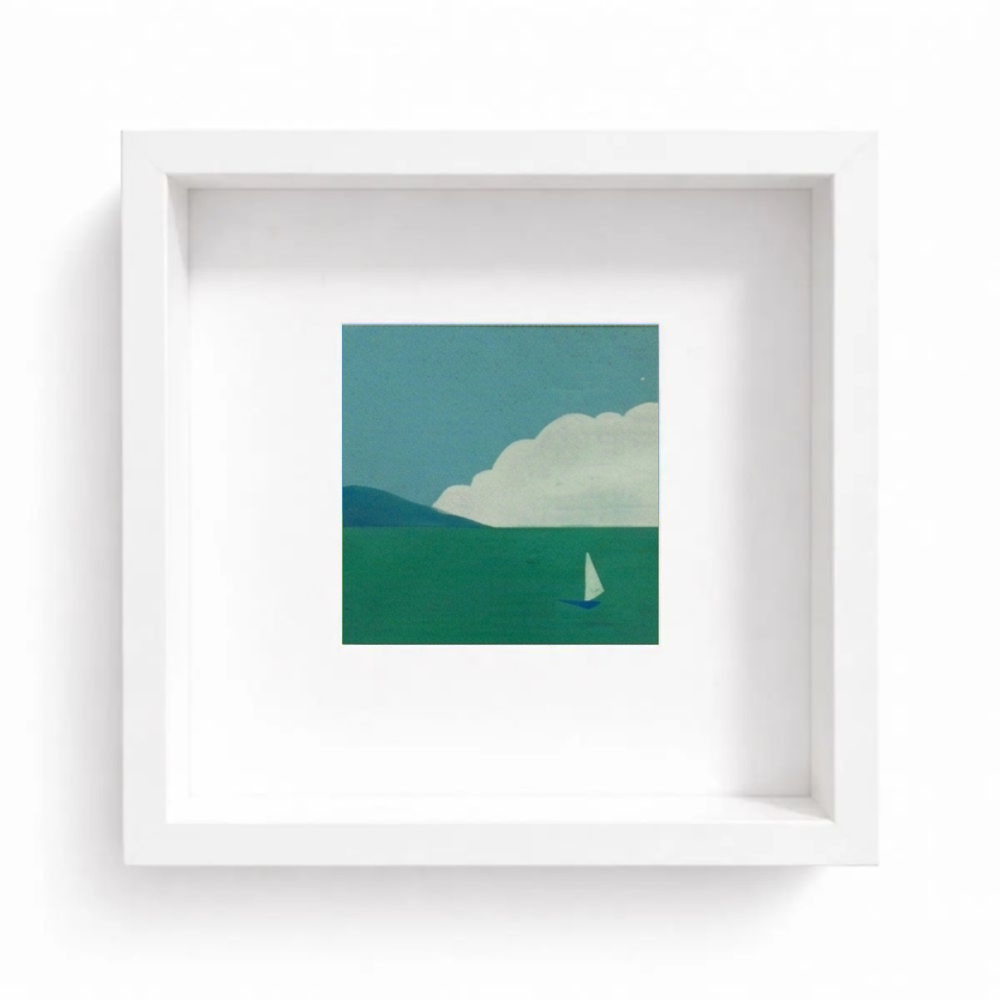
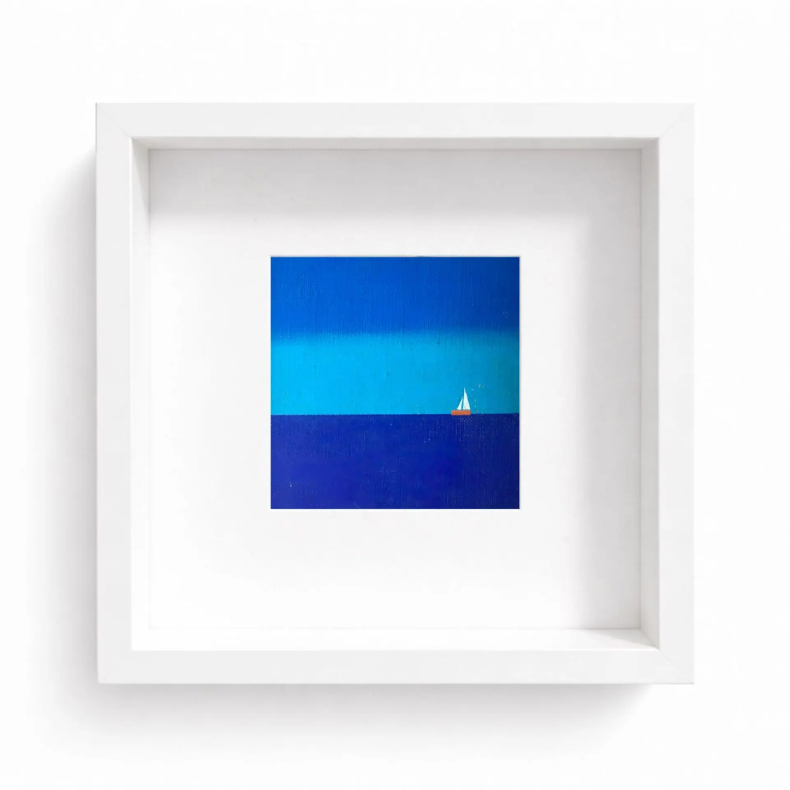

Pastel Paintings of Coastal Landscapes.
大山朱里 / Oyama Akari
海をメインテーマに据えた風景画を手掛ける画家。
静岡大学教育学部で美術とデザインを学び、現在は東京都内を拠点に制作活動を行っています。
沼津や静岡、浜名湖をはじめとする静岡県の海の情景を、パステルで柔らかく表現。
温もりのある優しく穏やかな世界観を大切に描いています。
現在は絵画販売サイトでの展開に加え、東京都内のギャラリーを拠点に個展を開催するなど、精力的に作品を発表し続けています。









ご依頼・ご相談等はこちらのメールアドレス
example@gmail.com
または下記お問い合わせフォームよりお気軽にご連絡ください。